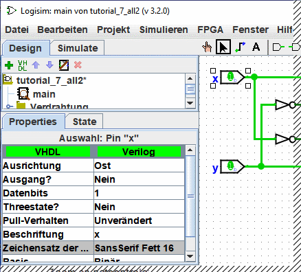

Die Attribut-Tabelle
Viele Bauelemente besitzen Attribute, die das Verhalten und Aussehen des Bauelements steuern. Die Attribut-Tabelle dient der Anzeige und Bearbeitung der Werte dieser Attribute.
Um auszuwählen, für welches Bauelement die Attribiute angezeigt oder bearbeitet werden sollen, klicken Sie das Bauelemente mit dem Bearbeitungswerkzeug an ( ). (Sie können das Bauelemente auch mit der rechten Maustaste (Control-Klick bei Mac OS X) anklicken, und den Punkt "Attribute anzeigen" aus dem Kontextmenü auswählen. Auch, wenn Sie das Bauelement mit dem Schaltwerkzeug (
). (Sie können das Bauelemente auch mit der rechten Maustaste (Control-Klick bei Mac OS X) anklicken, und den Punkt "Attribute anzeigen" aus dem Kontextmenü auswählen. Auch, wenn Sie das Bauelement mit dem Schaltwerkzeug ( ) oder dem Textwerkzeug (
) oder dem Textwerkzeug ( ) bearbeiten, werden Ihnen die Attribute dieses Bauelements angezeigt.
) bearbeiten, werden Ihnen die Attribute dieses Bauelements angezeigt.
Die folgende Bildschirmkopie zeigt Ihnen, wie es aussieht, wenn Sie den oberen Eingang unserer XOR-Schaltung anklicken, und dann die Attribut-Tabelle bis zum Beschriftungsfeld durchblättern.

Um ein Attribut zu ändern, klicken Sie auf dessen Wert. Das Aussehen der Schnittstelle zur Bearbeitung des Attributs hängt von der Art des jeweiligen Attributs ab: für das Attributfeld der der Zeichensatz der Beschriftung erscheint ein Dialogfenster zur Auswahl der Schriftart, für ein Beschriftungsfeld gibt es ein Textfeld und für wieder andere Felder erhalten Sie ein Ausklappmenü mit mehreren Auswahlmöglichkeiten (z.B. für die Ausrichtung der Beschriftung).
Jede Art von Bauelement hat einen anderen Satz von Attributen. Ein Beschreibung, was diese im Einzelnen bedeuten, finden Sie in der Bauelementereferenz der Dokumentation.
Wenn mehrere Bauelemente ausgewählt sind, werden in der Tabelle nur die Attribute angezeigt, die diese Bauelemente gemeinsam haben. Mit ausgewählte Leitungen spielen hierbei keine Rolle. Wenn die ausgewählten Bauelemente unterschiedliche Werte für ein Attribut aufweisen, dann wird der Wert dieses Attributs als leer angezeigt. Änderungen eines solchen gemeinsamen Attributs wirken sich unmittelbar auf alle ausgewählten Bauelemente aus.
Weiter: Werkzeugattribute.